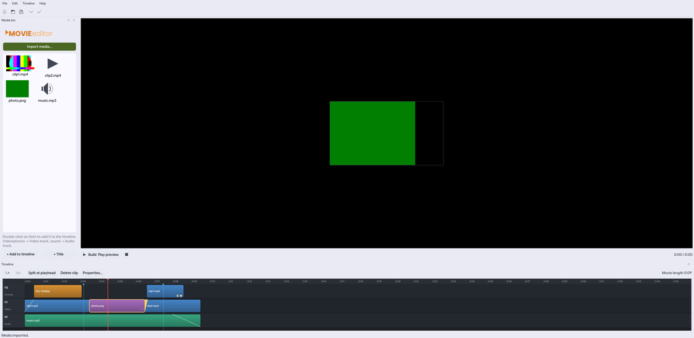

A ground-up recreation in the spirit of Serif’s MoviePlus — the same menus, in the same places.
Edit home video on a multi-track timeline — trim and split clips, cross-fade between shots, add titles, slow-motion, picture-in-picture and chroma key — then render an MP4.

Install the dependencies for your distribution, then clone and run the installer. Nothing needs root except the dependency line.
Arch / CachyOS / Manjaro:
sudo pacman -S --needed pyside6 ffmpegThen, on any distribution:
git clone https://github.com/janszafranski/just-a-collection-of-apps.git
just-a-collection-of-apps/apps/movie/install.shOnly PySide6 is strictly required — use your distribution's package,
not pip, so the app follows your desktop theme. The installer checks the rest and tells you
what, if anything, is missing. There is an uninstall.sh beside it.